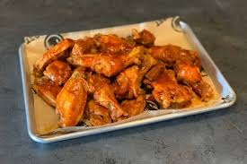
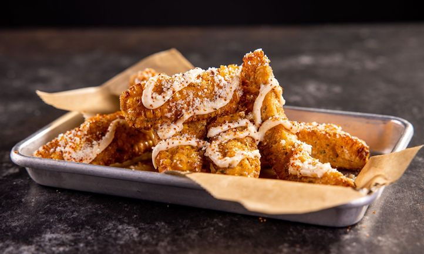
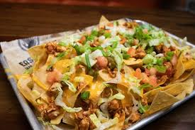
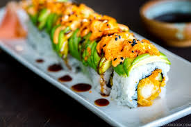
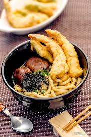
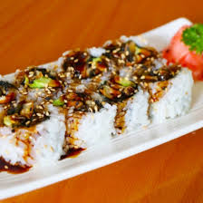
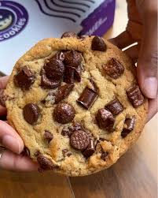
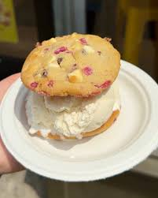
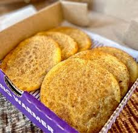

East Coast Wings
Located just 0.3 miles from Petty on Tate St., East coast wings is famous for its broad selection of wing flavors. Open 11AM-10PM

$9.99 (5pcs) - East Coast Wings has a amazing variety of wings that I highly reccomend.

$9.49 - "Fiesta Corn R'bz" are an authentic style street corn!

$12.49 - You'd be suprised that East coast has some amazing Nachos
Sushi Republic
Located just 0.3 miles from Petty on Tate St., Sushi Republic is known for its amazing sushi and amazing appitizers . Open 11AM-10PM

$13.00 - The "Red Dragon Roll". Amazing red dragon roll with eel sauce!

$12.50 - Amazing Tempura Udon.

$8.50 - Eel Avocado roll. A simple roll that is amazing.
Insominia Cookie
Insomia Cookies is a amazing place to stop for a cookie desert. Open 11AM - 3AM

$2.79 - Chocolate Chunk Cookie! Amazing chocolate cookie with large cholocate chunks!

$9.29 - Cookie Which! A ice-cream sandwhich made with 2 cookie flavors of your choice

$2.79 - Snickerdoodle Cookie. A amazing snickerdoodle cookie that reminds me of grandma!